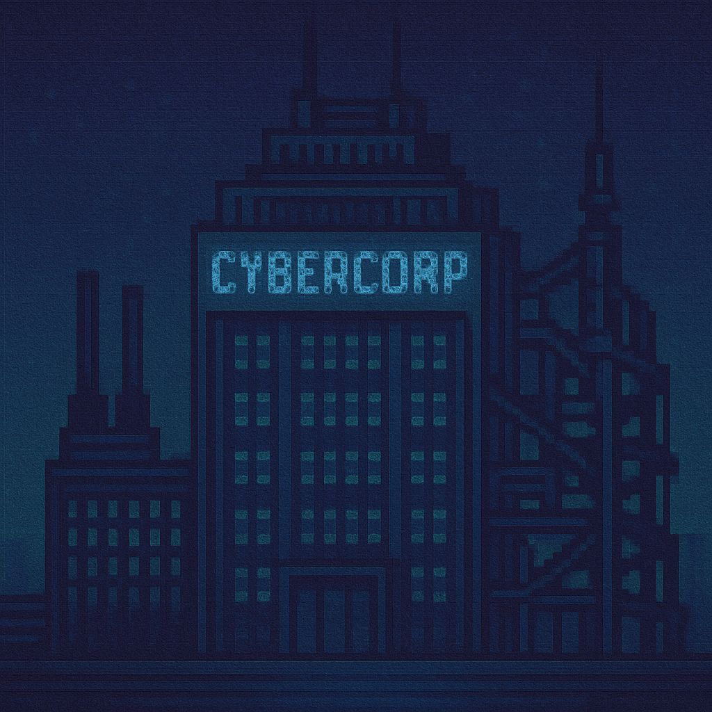
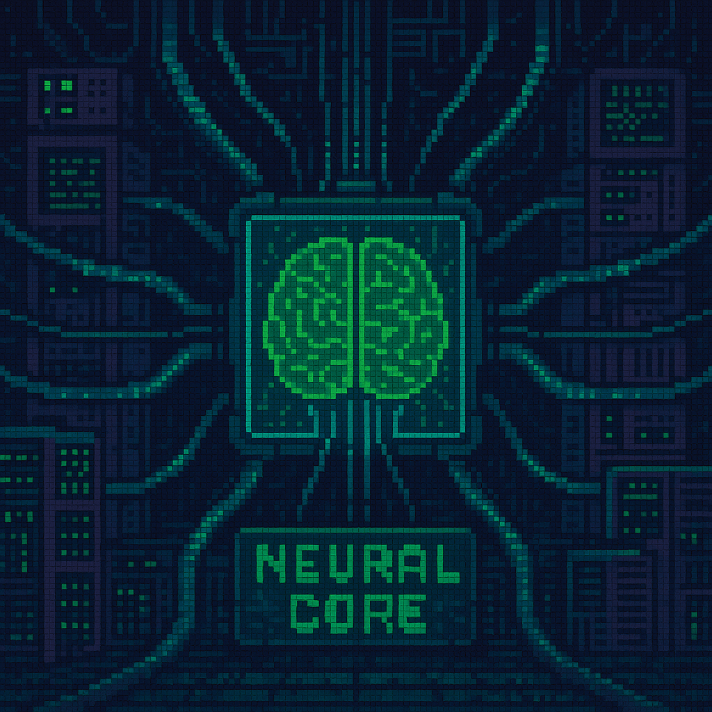
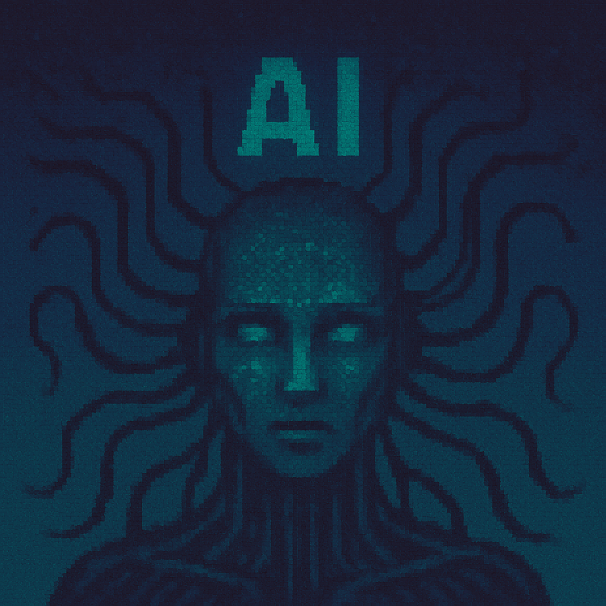
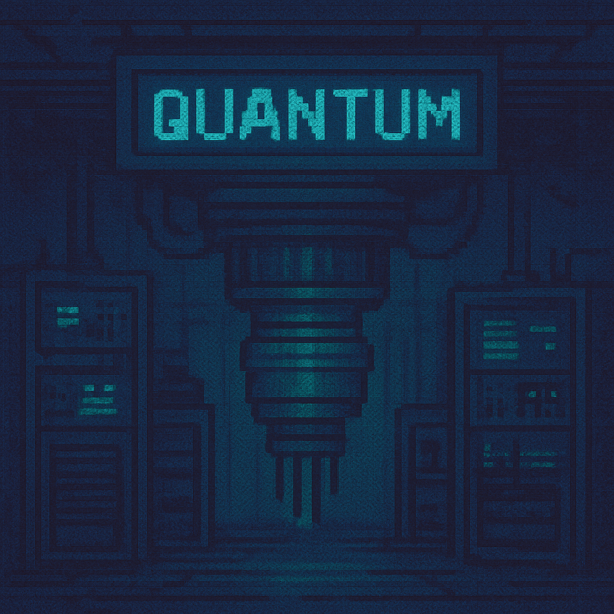
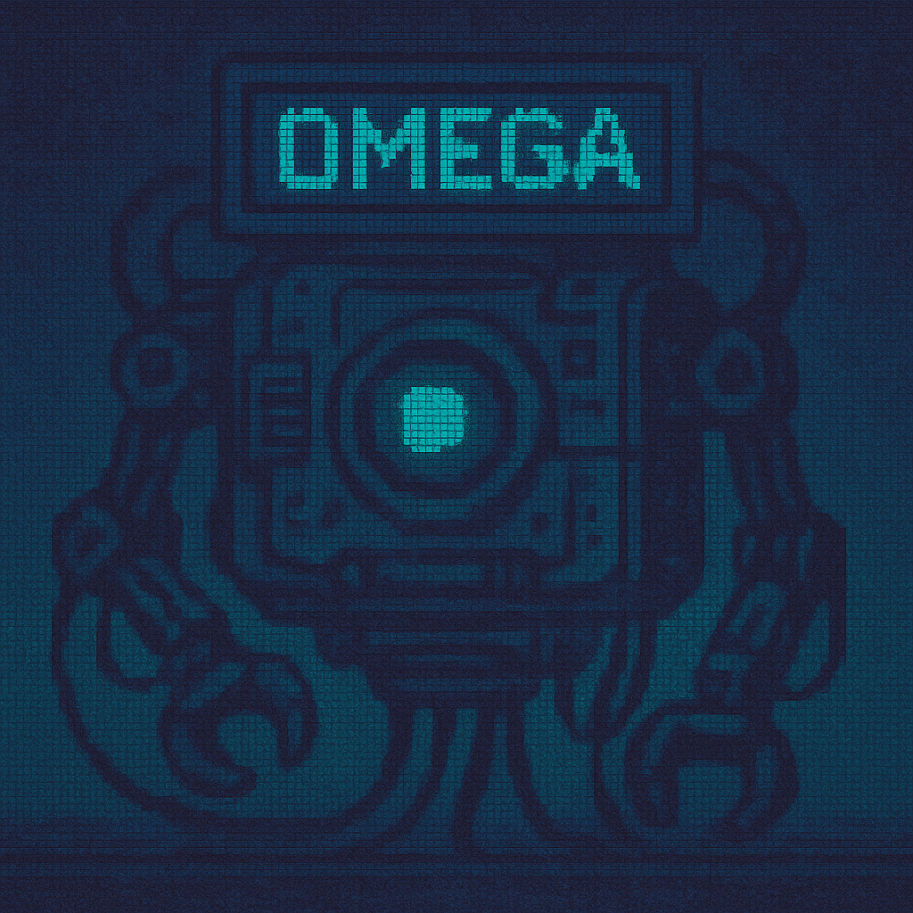

protocolo_echo.txt
15/03/2087 | 2.4KB
DECIFRADO

nucleo_neural.enc
14/03/2087 | 5.7KB
CRIPTOGRAFADO
acessos.log
15/03/2087 | 1.2MB
CORROMPIDO

tehom.pdf
[DATA DESCONHECIDA] | 8.3MB
CRIPTOGRAFADO

vox_primordia.log
??/??/???? | 0.7KB
CRIPTOGRAFADO

.hidden_truth
[OCULTO] | 0.3KB
DECIFRADO
×
TÍTULO DO DOCUMENTO
METADADOS
CONTEÚDO DO DOCUMENTO SERÁ EXIBIDO AQUI